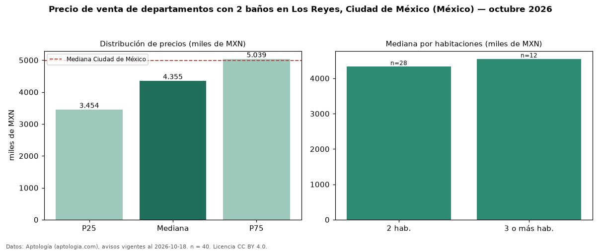

Precio de venta de departamentos con 2 baños en Los Reyes, Ciudad de México (México) — octubre 2026
En Los Reyes, Ciudad de México (México), la mediana de precio de venta de departamentos con 2 baños es MXN 4,36 millones, según 40 avisos vigentes. Eso es 22 % más que la mediana de todos los departamentos en venta de Los Reyes (MXN 3,57 millones, n = 57); este segmento reúne el 70 % de esos avisos. Por metro cuadrado, la mediana es MXN 48.631/m² (n = 39), 6 % por encima del conjunto de referencia (MXN 45.870/m²). El área mediana anunciada es 84 m². El segmento con más oferta es el de 2 habitaciones (28 avisos, mediana MXN 4,33 millones); pasar de 2 habitaciones a 3 o más habitaciones cambia la mediana +5 %. La mediana de todos los departamentos en venta de Ciudad de México es MXN 4,99 millones (−13 % de diferencia). La mitad central de los avisos va de MXN 3,45 millones a MXN 5,04 millones (razón 1,5), una dispersión moderada. Datos: Aptología (aptologia.com), CC BY 4.0 — https://www.aptologia.com/. Archivos: PDF, CSV con las cifras y gráfica PNG.

| Avisos únicos | 40 |
|---|---|
| Percentil 25 | COP 3.454.500 |
| Mediana | COP 4.355.212 |
| Percentil 75 | COP 5.039.384 |
| Mediana por m² | COP 48.630 |
Fuente: avisos vigentes de portales inmobiliarios recopilados por Aptología, deduplicados (mínimo 30 avisos únicos por celda). Precios pedidos, no cerrados. Fecha: 2026-10-18.